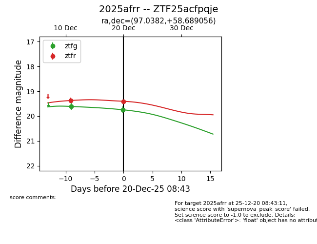
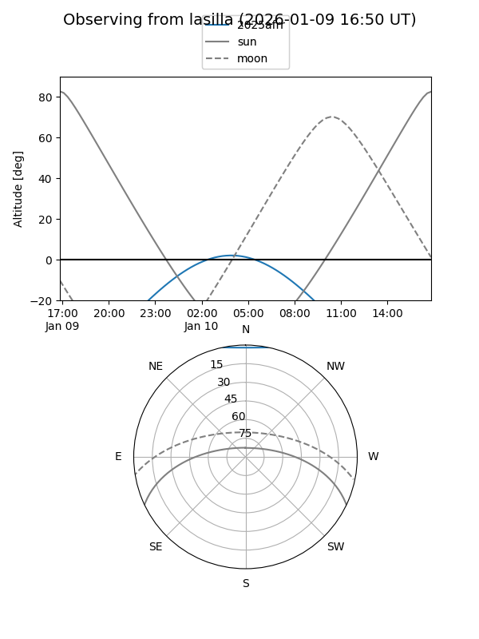
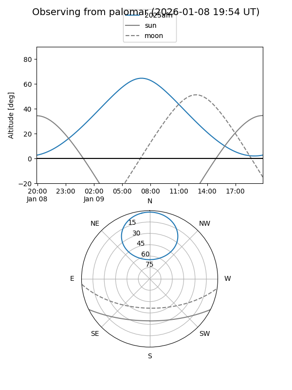
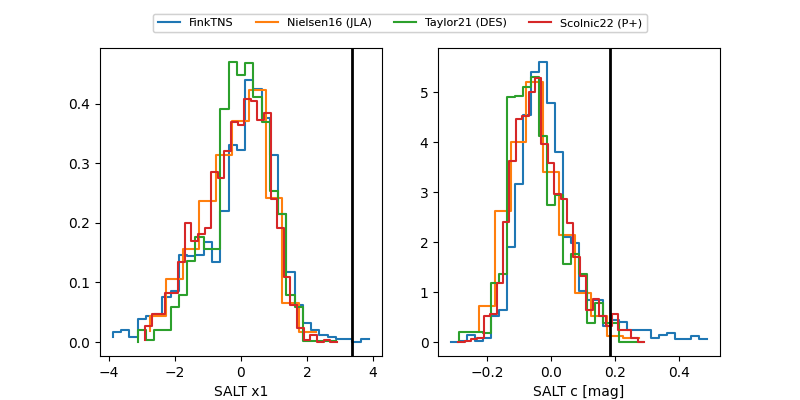

2025afrr
Target 2025afrr at 2025-12-20 07:04
Aliases and brokers:
FINK: fink-portal.org/ZTF25acfpqje
Lasair: lasair-ztf.lsst.ac.uk/objects/ZTF25acfpqje
ALeRCE: alerce.online/object/ZTF25acfpqje
TNS: wis-tns.org/object/2025afrr
YSE: ziggy.ucolick.org/yse/transient_detail/2025afrr
alt names
ZTF25acfpqje (ztf,fink_ztf)
2025afrr (tns,yse)
Coordinates:
equatorial (ra, dec) = 97.0382,+58.68906
equatorial (HMS+DMS) = 06:28:09.18,+58:41:20.60
galactic (l, b) = (156.3209,+20.03926)
Flags:
Photometry:
last ztfg=19.74, ztfr=19.37
2 ztfg, 1 ztfr detections
Lightcurve

Visibility


Additional plots
